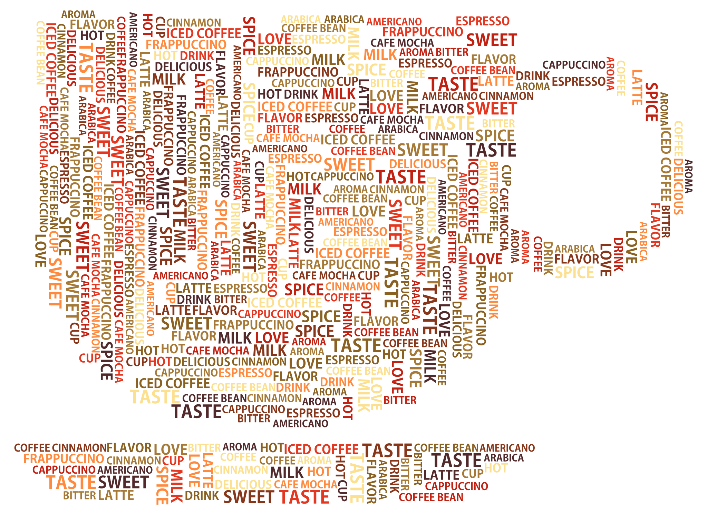

A oto przed wami 3 ciekawostki dotyczących odżywiania (tak dla rozbudzenia ciekawości :) ). To niewiele, ale zawsze po więcej informacji można sięgnąć do dietetycy.org.pl oraz elle.pl, czy też i innych stron internetowych.
Fakt, można w ten sposób szybko stracić kilka, a nawet kilkanaście kilogramów, lecz organizm po zakończeniu odchudzania przystąpi do odbudowy zapasów. Efekt jo-jo zapewniony. Długie stosowanie diety proszkowej prowadzi do niedoboru witamin i minerałów, osłabienia organizmu i ciężkich depresji.
Nieprawda. Grillowanie jest jednym z najlepszych sposobów przyrządzania mięsa. Jeśli wybierzemy niezbyt tłuste gatunki, np. polędwicę wołową lub cielęcą, rostbef, łopatkę, udziec cielęcy, karkówkę czy szynkę, i będziemy piekli je bez tłuszczu, z dużą ilością przypraw, danie będzie nie tylko smaczne, ale i dietetyczne. Zioła ułatwiają trawienie i mogą zastąpić sól, której nadmiar jest dla organizmu szkodliwy. Mięso z grilla bywa niebezpieczne jedynie wtedy, gdy tłuszcz wytapiający się z niego kapie bezpośrednio na rozgrzany ruszt. Wtedy właśnie powstają rakotwórcze substancje gazowe, tzw. dioksany. Możemy tego uniknąć, umieszczając mięso na aluminiowej tacce lub w folii. Podobnie powinniśmy postępować z grillowanymi warzywami.
| Nazwa produktu | Liczba kalorii przypadająca na 100g |
|---|---|
| Masło orzechowe | 589 |
| Skwarki | 579 |
| Big Mac | 550 |
| Mocaccino | 461 |
| Kokos | 370 |
{kind=link}